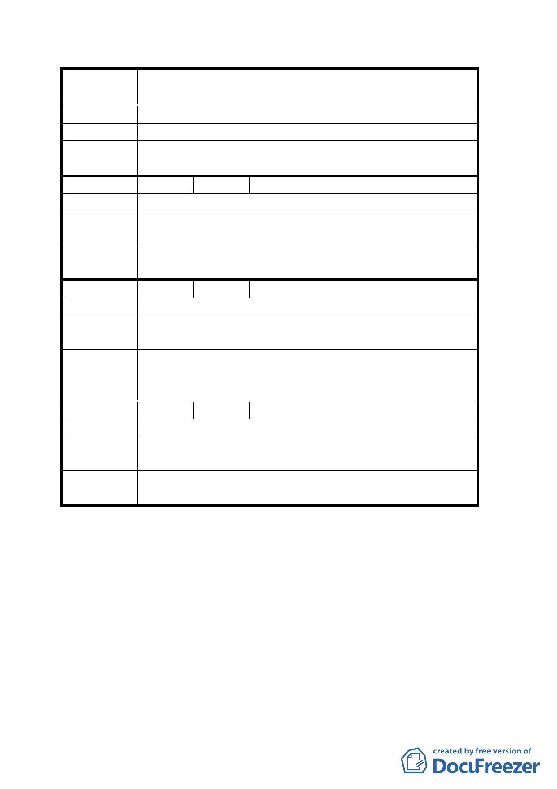

案
名
修訂臺北市士林區商務產業專用區（原士林電機廠）細部
計畫有關土地使用分區管制及事業財務計畫規定案
通將變更為壅塞。
建 議 辦 法 故請求優先開通磺溪街五十巷至中山北路六段一五七巷 。
委員會決議
計畫內容已對於未開闢道路之先期處理作說明，請市府主
管單位配合考量週邊計畫道路之闢建時程妥善配合。
編 號 ５ 陳情人 王兩傳
陳 情 理 由 士電開發變更案市府配合其徵收道路用地。
建議辦法
敬請配合磺溪街五十巷至中山北路間之道路徵收，以利通
行。
委員會決議
計畫內容已對於未開闢道路之先期處理作說明，請市府主
管單位配合考量週邊計畫道路之闢建時程妥善配合。
編 號 ６ 陳情人 吳坤土
陳 情 理 由 本里里民殷切盼望能有一個活動中心或集會場所。
建議辦法
此案於士電開發回饋案於規劃之初始即已承諾，請務必遵
守。
依發展局書面資料士林電機已同意承接公園地下停車場、
委員會決議 區民活動中心整體規劃作業，請本府相關單位積極配合辦
理。
編 號 ７ 陳情人 趙里長鳳南
陳 情 理 由 避免交通出現擁塞瓶頸，影響地區發展。
建議辦法
建請同步完成首揭地點之道路徵收闢建，使地區開發與交
通動線有更完善的結合。
委員會決議
計畫內容已對於未開闢道路之先期處理作說明，請市府主
管單位配合考量週邊計畫道路之闢建時程妥善配合。
討論事項二
案名：變更臺北市國父紀念館周圍特定專用區內住宅用地為特
定住宅區、工業用地為第三種工業區及修訂土地使用分
區管制規定計畫案
說明：
一、本件係市府以九十三年三月十日府都規字第○九二二八
二三九七○三號函送到會，並自九十三年三月十一日起
公開展覽三十天。
第 4 頁，共 12 頁